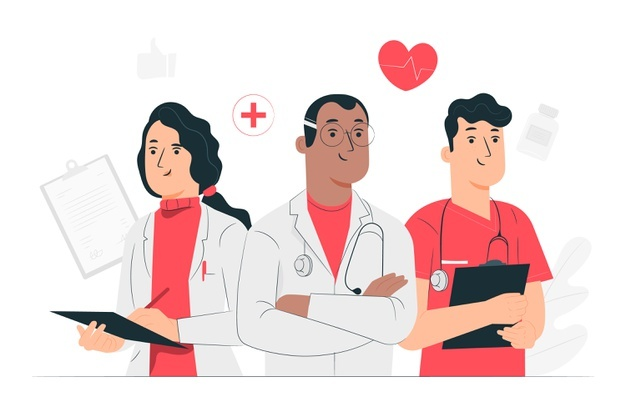

Consultas médicas las 24 horas del día
Le ofrecemos consultas médicas las 24 horas del día, profesionales a su disposición a cualquier hora y cuando lo necesite.
Profesionales altamente capacitados
Médicos profesionales altamentente capacitados con muchos años de experiencia en el área, preparados para atender sus problemas médicos sin importar su índole.

Consultas por medio de videoconferencia
Tiene a su disposición la opción de recibir consultas médicas vía videoconferencia, la plataforma en la que ud se sienta más cómodo.

Consultas médicas vía chat
Ofrecemos consultas médicas vía chat en dado caso ud no se encuentre en condiciones de poder realizar una videollamada, vía chat estará un mécido atendiendole cuando lo necesite.
Seguridad en tus datos
Disponemos de sólidos métodos de seguridad para resguardar tus datos, tus pagos y toda tu información personal, en dado caso que un falle se dé, te garantizamos un reembolso inmediato.